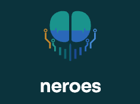

Este relatório reúne o que o headset neroes registou enquanto ouviste o mantra na nossa banca. Doze biomarcadores cerebrais, cada um comparado com o teu próprio estado de repouso antes da sessão.
Cada cartão mostra a evolução do biomarcador durante a sessão, o valor em repouso e sob mantra, e o que a variação significa.
{{ m.interpretation }}
{{ p.text }}
A saúde mental devia ser tão treinável quanto a saúde física.
Não é um dispositivo médico; não diagnostica, cura nem trata qualquer condição. Os valores deste relatório descrevem uma única sessão de curta duração em ambiente de festival e não substituem avaliação profissional.
{{ meta.footerCode }}